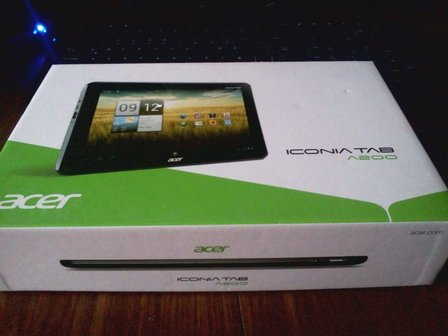

Review: Acer iconia tab A200
Después de tener un tiempo la Acer A200, era hora de un review.

Cositas que tiene / prestaciones
- Procesador: Nvidia Tegra 2 250 T20 1GHz
- 1GB de RAM
- Pantalla de 10.1in (o 25.6cm) 16:1, 1280x800, LCD, capacitiva, Acer CrystalBrite, WXGA, (damn you) glossy
- Disco de 8GB (pero hay de 16GB)
- Conexiones: USB 2.0 (host), 3.5mm stereo jack, MicroSD/MicroSDHC hasta 32GB, micro USB (propietario)
- WiFi, Bluetooth
- Tamaño: 26cm x 17.5cm con 1.24cm de grosor
- Peso pluma de 0.71kg
- 2Mp de cámara frontal
- Sensores: aceleración, GPS, brillo, giroscopio
- Batería: 3260mAh. Idle (sin WiFi, brillo minimo): 15hs - Load
(
WiFibrillo al máximo): 5hs
Primeras impresiones
¡Wooooo tengo el futuro en mis manos!
¡Mira qué lindo es toquetear la pantalla! Ewwww mira los dedazos... ¿por qué tiene "pantalla" en los bordes?
No esta taaaaaaaaan pesada... uhhh si, después de 5 minutos si...
¡Mira! ¡Tiene lock de rotación físico!
¿Por qué los parlantes están atrás? A mira, tiene estos puntitos para que no se te deslize.
¡Al fin! ¡Una tablet sin cámara trasera! Alguien entendió el mensaje.
Impresiones después de meses de uso
Anda bien.
Hardware
A nivel hardware se vé solido. No es algo que parece que se va a romper asi no mas, o algo muy delicado. La cubierta es plástica con algo gomoso atrás (gomoso de plástico gomoso, no gomoso de gomitas de ositos ni goma de borrar). Las puntas estan redondeadas, cosas que no te la claves en las manos, piernas, estómago... cuello, pie, ojo.
El peso supongo que esta bien, las tablets de este tamaño (de 9 para arriba) se diseñaron para usarse estando sentados en un sillón con las patas arriba, como cuando miras algo en la tele y te queres poner cómodo. No entiendo porque la gente se queja mucho sobre eso. Quejate con una tablet de 7-8 que son para "usarse en la mano". Sé que la competencia (de prestaciones similares) son mas livianas, pero carecen de conectores (take that Apple and Samsung!)
Que venga con USB host y micro SD card reader es de agradecer. No muchas vienen con eso, y mucho menos las de 7", no se por qué piensan que no es necesario. Esta bien, cada vez vienen con mas espacio interno pero igual, que pasa si quiero ver una peli que tengo en un flash drive o quiero unos temas de alguien y me dan la tarjetita? Por donde me los meto? Si, Bluetooth algunos dicen. El problema del Bluetooth es, primero el consumo, y después emparejar los dispositivos, poner la contraseña y tal. Crear una red WiFi para pasar archivos es otra opción, pero es lío. También sirve para evitar enchufar por USB y conectar por el MTP (media transfer protocol), que Sr. Google pensaba que era cool y fácil pero terminó siendo un tiro a la culata.
Lo malo es que no venga con hdmi. Aunque nunca tuve la necesidad de usarlo. Debe ser porque no soy de mirar películas o necesitar usar una tele para ver las tablet mas grande.
Como decía anteriormente, me gusta el hecho que solo traiga cámara frontal. No probé como anda para hacer vídeo chat porque el Skype no se deja instalar. Eso si, me saque un par de fotos para ver que onda y funciona. La cámara trasera en tablets (especialmente las de 9" para arriba) no les veo sentido. Es como sacar fotos con un libro y se ve muuuuy raro.
Pantalla
No me convence eso de 10.1" en una tablet. Siempre me cayó
bien/quise las de 8" pero no hacen muchas con ese tamaño. Después
de ver el iPad mini en uso por una persona normal, me dí cuenta que ese
"tamaño" es uno de los mejores para una tablet para uso diario. Digo
"tamaño" porque no soy de guiarme con las pulgadas para medir pantallas.
Hagamos una campaña para que se midan por altura y ancho., el tamaño
que tiene el iPad mini. Espero que gracias a eso, se hagan mas de ese
tamaño, porque me parecen perfectas para las tablets.
La pantalla es muy dedazos whore (fingerprint magnet). Creo que había una tecnología (olefóbica, también sirve como anti-acné) para que las pantallas no se ensucien tan rápido, me pregunto porque no lo pusieron, tendría que ser defacto para productos táctiles. No da hacer un toquecito y te quede la marca, lista para ser usada en tu contra; aunque de esa manera sabes si la usaron sin tu permiso, a no ser que sean vivos y hayan limpiado la pantalla con paño de microfibra.
Dedazos whore
Como toda tablet, la pantalla es buena para ver/leer imágenes y ver videos. Nunca toqué un iPad con el retina display ese, que dicen que para imagenes es un WOW! pero vamos, no creo que cambie mucho, no? Digo, el ser humano normalito no creo que se fije mucho en eso. Solo puedo decir que se ve no-mal y los globitos de diálogo se leen sin problemas.
Sistema operativo
Por suerte esta tablet me vino con Android 4.0.x (Ice Cream
Sammich Sandwich para los amigos), que fue una de las razones por
la que la compré. Vamos, no voy a ahorrarme unos $500 y sufrir con un OS
que no fue diseñado para tablets y no poder cambiarle la ROM . Anda
bastante fluido aunque con algunos problemas típicos de Android, como
el de la falta de espacio que se ocupa magicamente.
Really Android?
¿Qué onda con las actualizaciones? ¿Donde esta Android 4.1 (JellyBean)? Está en su casa, escondiendose para no ser comido. Ahora mismo tengo Android 4.0.3 que recibí de una actualización OTA, por eso puse la x arriba, no me acuerdo si venía con 4.0.2 o fue un fix por parte de Acer. Todavía no se sabe si esta tablet va a recibir JellyBean, decían que si- que no. Sé que hay ports para ponerle. ¿Le voy a cambiar la ROM? Lo dudo. Esta versión de android anda bastante bien y fluido (sacando problemas típicos de Android). Asi que creo quedarme (por ahora) con esta versión o hasta que ande mal.
Al contrario de lo que la gente piensa, es cómodo escribir con teclado virtual en este tipo de tablets. No es malo, el de default es amplio y se puede tipear cómodamente con las dos manos. Los problemas van por otro lado: posición de teclas, símbolos de no tan fácil acceso (reconozco que soy de usar símbolos a diario que la gente no), la predicción no es tan buena.
Sonido, micrófono, batería
Sonido: por lo que pude escuchar anda bien, el problema es la locación de los parlantes: atrás donde esta típicamente tapado. Tipo los ventiladores de las notebooks. Podes conectarle auriculares pero es escuchar con un mp3 player tamaño jumbo.
El micrófono esta en el borde superior, no se si es buena posición y no lo pude probar.
Los juegos que probé anduvieron bien. No soy fan de juegos tipo acción en pantallas táctiles.
Duración de batería, dura lo que dice lo que dura (más o menos, no cronometreé). Si solo queres hacer cosas (simples) con conexión a internet y tenes la notebook a batería, no dudes en transladar esas tareas a la tablet, se la va a bancar.
Ya terminé, conclusiones
La tablet es buena y a buen precio comparando con otras tablets de prestaciones similares. Todo depende para que la vas a usar (como todo).
Como decia al principio, después de usar una tablet con este tamaño de pantalla, debo decir que solo sirve si vas a mirar muchas peliculas (series, documentales, pr0n, videos varios...), usarla para manejar tu pc o navegar bastante. Para otro tipo de cosas, el tamaño se me hace un poquito grande, tanto fisicamente como apps no diseñadas para tomar el espacio de tablet (y algunas las hacen pésimo).
foobar2000 en Android :D... no :(
¿La venderé y compraré una de 7.x"-8"? seguro, solo decime una que tenga USB host y micro sd slot. Complicado, ¿no?. Hasta que no se den cuenta que se necesita eso y lo implementen, me quedaré con esta. Sé que la idea es hacer todo via conexión inálambrica/WiFi pero no siempre es la mejor solución.
P.D. Hagamos una campaña para que las pantallas se midan por altura y ancho.
Comments
How to comment
- Tweet with an URL to this post (
http://blog.aquinzi.com/review-acer-tab-a200/) - Write a post linking here and send me a Webmention.
- With disqus
Leí atentamente tu review y me sirvió para tomar una decisión. Estaba entre me compro, no me compro, me compro, no me compro… Y finalmente, me convencí de que NO soy mercado para una tablet. Me ahorraste unos pesos n.n Parecen en verdad interesantes, si viniera de arriba, tipo regalito de cumpleaños :P la aceptaría… pero no creo que le diera mucho uso. Lo mismo me pasó con el Papyre. Sigo prefiriendo leer en papel. ¿estoy viejo? Pienso que para mis gustos/edad/trabajo/hobbies, me sigue resultando más útil mi notebook. Me queda una duda: Yo pensé que ” cuanto más grande la pantalla, mejor” no entiendo por qué preferirías una de 7/8″ Y otra: ¿Para qué exactamente usás VOS tu tablet?
Ah, tu foto con el smiley face es muy creepy… no sé, me da impresión! … _________________________________ Este es el mejor párrafo del review: Me gustó lo del corazón que hace tonton :P
¿Sabes lo que es no poder echarte una partidita de Tetris antes de…. no se…. un examen, encontrarte con ese alguien especial (o espacial) que reina en tus sueños y tu corazón hace tonton al verle y después te deja con el corazón con agujeritos, entrevistas, etc?…. ___________________________________
Te felicito y saludo tu review. Gracias x hacerme ahorrar plata y estoy de acuerdo, las pantallas deberían medirse por ancho/alto y no por pulgadas en diagonal. El sistema de pulgadas es obsoleto.
nanu-nanu (?)
El tema de las tablets es para consumo. Si no sos de navegar (o no posees una notebook liviana), mirar videos, leer comics, etc. Mucho no te va a servir.
Lo de la pantalla es por tamaño de la tablet. Se hace media incomoda con las 10.1″. Hasta las 9″ te las puedo aceptar, pero esa 1″ hace la diferencia. Si o si la tenes que tener en la falda o sobre un stand.
Yo compre la tablet para reemplazar al kindle y un poquito mas. El kindle lo habia comprado para estudiar japones, pero no resultó ser tan cómodo. La tablet cumple esa funcion + lectura de comics/manga que tengo por ahi + un par de libros + navegacion por internet cuando quiero hacer algo rapido (buscar algo) pero no quiero prender la notebook o usar el celular. Sinceramente, no la hubiese comprado si tuviese mas fácil acceso a los libros para aprender japones (aca ni hay, e importarlos ya no valen la pena).
nanu-nanu!
Que bronca me da lo de android y su consumo de memoria atroz! Yo creo que mínimo para Jelly bean se necesita 2gb de RAM. Me sorprende que dure tan poco la batería, imagino debe ser por culpa de android también… En eso si Apple saca mucha ventaja, tengo el ipad y con uso “medio” siempre conectada a la red cargo la batería unas 2 veces por semana (tampoco estoy todo el día con la tablet encima, pero cuando llego del laburo aprovecho para leer sin tener que prender la pc) Es verdad lo que decís de la cámara en la tablets. Cada vez que veo a alguien sacando fotos con una no se sí reír o llorar. Si esta bien para hacer videoconferencia pero fotos??? Nooooooo! Buena review, entretenida jajaja. Keep on!!
Para mi, Android sigue en periodo beta para final, iOS ya paso de ser beta a poder tener una primera version decente. Igual, me da bronca que android sea “SO para estar todo el tiempo conectado” y la bateria sea pesima. Segun entiendo, BlackBerry es eso y la bateria dura bastante.